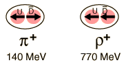

The Rho Meson
| Particle | Symbol | Anti-
particle | Makeup | Rest mass
MeV/c2 | S | C | B | Lifetime | Decay Modes |
| Rho | ρ+ | ρ- | ud | 770 | 0 | 0 | 0 | 0.4
x10-23 | π+π0 |
| Rho | ρ0 | Self | uu, dd | 770 | 0 | 0 | 0 | 0.4
x10-23 | π+π- |
| Omega | ω0 | Self | uu, dd | 782 | 0 | 0 | 0 | 0.8
x10-22 | π+π-π0 |
The rho meson has the same quark composition as the pion and can be considered to be an excited state of the pion. The fact that its mass is five and one half times the mass of the pion illustrates the difficulties of assigning mass to the quarks. Hadron masses depend upon the dynamics inside the particle, and not just upon the quarks contained. The quark modeling of the pion and rho classifies the pion as a pseudoscalar meson with zero angular momentum. The quarks have spin 1/2 and the spins are "paired" or anti-aligned. In the rho meson, a vector meson, the angular momentum is j=1, indicating parallel spins. Under the influence of the strong color force, the state with spins aligned has a higher energy which shows up as a larger mass energy. The analogy to the higher energy of aligned spins in a magnetic field (Zeeman effect) is instructive, but this difference in energy associated with the color force is enormous.

Georgi comments "There is good reason to believe that most of the mass of the quark that we 'see' in the mass of the proton or the rho is a dynamical effect of quark confinement, that the u and d quarks in the underlying QCD theory actually have masses much smaller than 1/3 the mass of the proton."
The omega meson is grouped here with the rho mesons because of similar mass and the same constituent quarks.
|
Index
Particle concepts
Reference
Georgi |